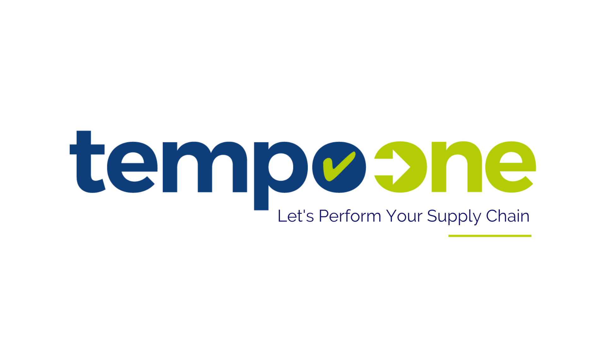

Gestion des Actifs
Un référentiel unique de chaque actif physique, avec suivi du cycle de vie et amortissement automatisé.
En savoir plusCentralisez vos équipements, bâtiments, véhicules, contrats et obligations réglementaires dans une solution intelligente.
Adopté par plus de 500 gestionnaires d'actifs.
| Compresseur A-12Site Toulouse | Conforme |
| Groupe froid B-03Site Lyon | À contrôler |
| Chariot élévateurEntrepôt Nord | En maintenance |
| Pont roulant P-7Atelier 2 | Critique |
La solution des leaders de l'infrastructure moderne

Des modules puissants conçus pour fonctionner ensemble, offrant une visibilité totale sur vos actifs physiques.
Un référentiel unique de chaque actif physique, avec suivi du cycle de vie et amortissement automatisé.
En savoir plusGestion complète des installations : occupation, maintenance technique et consommation d'énergie.
En savoir plusOptimisez votre flotte de véhicules : kilométrage, entretien, carburant et alertes de contrôle.
En savoir plusCentralisez vos contrats fournisseurs avec alertes de renouvellement et indicateurs de performance.
En savoir plusNe manquez plus une vérification obligatoire. Planification et rapports de contrôle horodatés.
En savoir plusDécouvrez les leviers de performance grâce à des tableaux de bord et à la modélisation prédictive.
En savoir plusQue vous soyez une municipalité, une organisation multi-sites ou un industriel, PATRISCOPE s'adapte à votre structure et à vos besoins.
Suivez votre patrimoine public et votre conformité réglementaire sur tout le territoire.
Centralisez la donnée de plusieurs sites, banques ou réseaux distribués.
Optimisez OPEX et CAPEX avec une gestion précise du cycle de vie de vos actifs.
Pilotez la maintenance des machines et infrastructures critiques avec précision.
Importez vos actifs, équipements, bâtiments et contrats en quelques clics.
Classez vos données par site, type, statut, responsable ou criticité.
Planifiez maintenances, contrôles et alertes réglementaires automatiquement.
Analysez vos coûts, risques et performances depuis vos tableaux de bord.
de temps passé à rechercher une information.
de visibilité sur les interventions terrain.
délai moyen de réponse de nos experts.
gestionnaires d'actifs accompagnés.
Stratégie de centralisation des actifs qui a réduit les arrêts non planifiés sur 14 sites.
Lire l'articleExploration de la convergence de l'IA et de la GMAO pour des bâtiments plus performants.
Lire l'articleUn guide complet pour maîtriser vos obligations de contrôle et sécuriser vos PV.
TéléchargerPiloter la transition vers les véhicules électriques sans perdre en visibilité.
Lire l'articleDéveloppez vos opérations sans complexité. Offres adaptées selon le volume d'actifs.
Pour démarrer la centralisation de vos premiers actifs.
Pour piloter un parc complet sur plusieurs sites.
Pour les organisations multi-sites aux besoins spécifiques.
« Nous avons enfin une vision claire de nos équipements critiques et de nos échéances réglementaires. »

« PATRISCOPE nous a permis de structurer notre patrimoine et de réduire les oublis de maintenance. »

« Les équipes terrain gagnent du temps et la direction dispose d'indicateurs fiables. »

Découvrez comment PATRISCOPE peut centraliser vos données, réduire vos coûts et améliorer votre performance opérationnelle.